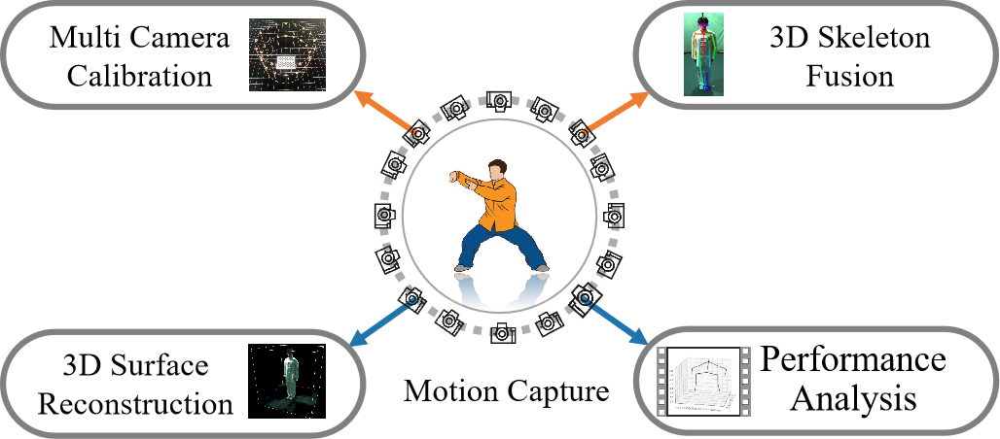

*: Equal contribution.
§: Corresponding author.
1 Beijing Sport University
Recent advances in computer vision and deep learning have influenced the field of sports performance analysis for
researchers to track and reconstruct freely moving humans without any marker attachment. However, there are few works
for vision-based motion capture and intelligent analysis for professional TaiChi movement. In this paper, we propose
a framework for TaiChi performance capture and analysis with multi-view geometry and artificial intelligence
technology. The main innovative work is as follows: 1) A multi-camera system suitable for TaiChi motion capture is
built and the multi-view TaiChi data is collected and processed; 2) A combination of traditional visual method and
implicit nerve radiation field is proposed to achieve sparse 3D skeleton fusion and dense 3D surface reconstruction.
3) The normalization modeling of movement sequences is carried out based on motion transfer, so as to realize TaiChi
performance analysis for different groups. We have carried out evaluation experiments, and the experimental results
have shown the efficiency of our method.

Multi-view TaiChi action dataset contains 23,232 action samples, including each sample’s RGB image, depth image, 2D skeleton and 3D skeleton data.
3D human surface reconstruction with NeRFs.
@inproceedings{2023_TaiChiCap,
title={TaiChi Action Capture and Performance Analysis with Multi-view RGB Cameras},
author={Jianwei Li and Siyu Mo and Yanfei Shen},
booktitle={Intelligent Technologies for Precision Sports Science (IT4PSS) at IJCAI 2023},
year={2023},
}